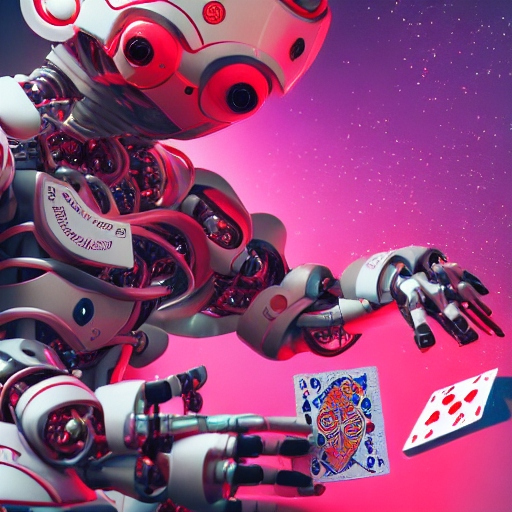

Mao is a card game where it is not allowed to talk about the rules. Together with a friend I created an AI that learns the rules by playing the game.
In the card game Mao one is not allowed to talk about the rules, this however does not mean that there are no rules. New players are at a disadvantage since they don't know the rules, and they will have to discover them while playing. Veteran players already know the rules and they will punish any player that makes a mistake.
Our idea was to create an ai, that knows no rules at first, just like a new player, but discovers the game while playing. We were interested to see how the ai would handle all the obstacles of playing the card game Mao.
The github repo contains our implementation of the ai. Apart from the implementation, the project report is also present in the repo. Below you'll find a more compact version of the report.
When trying to learn the rules of the card game Mao, there are 3 things you need to figure out. First of all you need to know when it is your turn to play. Secondly you need to know which cards can be laid when. The last part may not be obvious at first, but as soon as you start playing Mao, you'll realize that you sometimes have to perform an action when it is your turn. This will be the last thing that you have to figure out when playing mao.
Instead of creating 1 big ai, we created 3 smaller ai's each with their own dedicated purpose. At the end we combined them into one.
As a human this is usually the most easy part of the game. You sit in a circle, and you can follow who has already played. It could however happen that a special card is played like in uno, to make the direction turn, or something similar. To solve this problem we used Q-learning with the two last players in combination with the top card as state, and the wether or not to play as action. By using the two previous players we have an idea of the direction of who's at turn. This resulted in a great ai, that was almost optimal after only a few games.
Learning what cards to play when can be a bit more complicated. We tried to use some clever mechanisms get an optimal result. See the full report for more details.
For this ai we also used Q-learning. This time however we updated more in the Q-table than only the value at our state-action pair. When playing card games there is often a link between the cards symbols and also a link between the cards numbers. Instead of only updating our state-action pair, we update all the state action pairs that have the same number or symbol on the action card. Since the Q-table is rather large (52 cards x 52 cards) it takes the ai some time to become optimal.
The final ai has the task of knowing what actions to perform when at turn. This might just be the most complex part of the game, since rules about this may be very simple or, very complex. To tackle this problem we use two different approaches.
Once again we turned to Q-learning. Taking the n-last played cards as all the possible states. This resulted in a great ai that made very few mistakes. When making n larger however it took the ai much longer to reach this state. This is due to the fact the amount of states is exponential in the amount of cards looked at.
| Amount of cards to take into consideration | Amount of states |
|---|---|
| 1 | 53 |
| 2 | 532 = 2809 |
| 3 | 533 = 148877 |
| 4 | 534 = 7890481 |
This makes it unfeasible to use Q-learning when trying to learn complex action rules.
To solve tackle this issue we looked at neural networks Neural networks have the advantage that they are able solve problems for any given input size. They tend to be slow, but we went with them anyway since for a large n they would still easily outperform Q-learning.